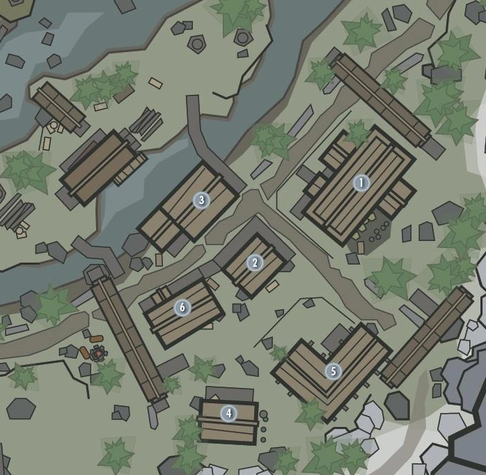

CAUCE BOSCOSO
Cauce Boscoso es una pequeña aldea de leñadores construida a orillas del río Blanco, y forma parte de la Comarca de Carrera Blanca. Es un importante punto intermedio en la ruta que discurre entre Helgen y Carrera Blanca. Es el primer asentamiento que el héroe conocerá después de huir de Helgen. De acuerdo a uno de los libros en The Elder Scrolls IV: Oblivion, "Cauce Boscoso es un pequeño asentamiento de la Armada Imperial". Fue fundada por los antepasados de Gerdur y Hod, los propietarios del aserradero del río. El jugador puede participar en la economía local, trabajando en varias tareas que le proporcionan los habitantes, como cortar leña y vendérsela a Hod. A pesar del reducido tamaño del pueblo, posee diversos negocios y goza de una relativa autosuficiencia, cultivando sus propias cosechas así como se desarrollan actividades de caza y pesca (en el río hay un buen número de salmones). Posee un molino de madera, una taberna, una herrería, un comercio y tres moradas con sus propios huertos
